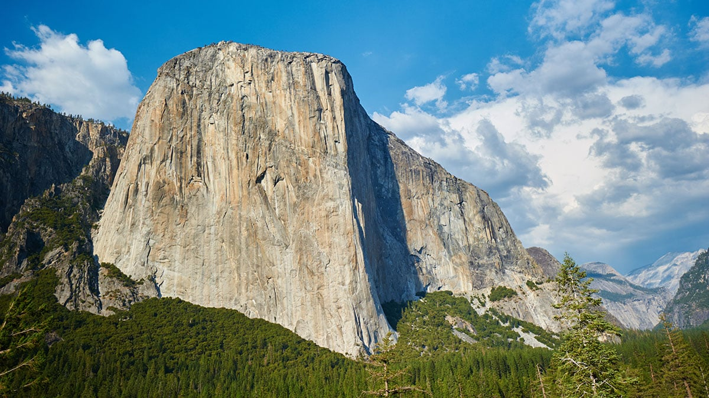
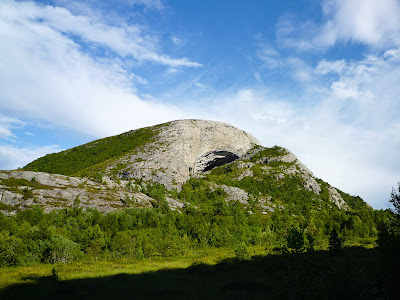
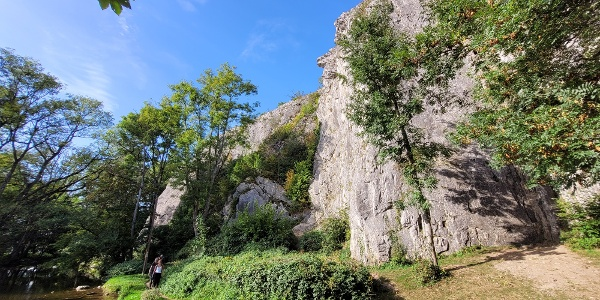

De mooiste klimlocaties
El Capitan, Yosemite National Park
El Capitan, gelegen in het Yosemite National Park in de Verenigde Staten, is een majestueuze granieten monoliet die uitsteekt boven de Yosemite Valley. Met zijn imposante hoogte van bijna 900 meter is El Capitan niet alleen een indrukwekkend natuurlijk kenmerk, maar het is ook een icoon in de wereld van het rotsklimmen. In totaal heeft de El Capitan 252 klimroutes.
Bekend om zijn steile granieten wanden en uitdagende rotsformaties, trekt El Capitan avontuurlijke klimmers van over de hele wereld aan. Een van de meest legendarische routes op deze monoliet is de Dawn Wall, die wereldwijde bekendheid verwierf door de vrije beklimming ervan door Tommy Caldwell en Kevin Jorgeson in 2015. Ook zijn er andere bekende routes die bekend staan onder rotsklimmers zo heb je 'The Nose', 'Salathe Wall', 'Grape Race' en 'El Corazon'. In 1993 werd The Nose voor het eerst vrij beklommen door Lynn Hill, die daar 4 dagen voor nodig had. Een jaar later kwam Hill terug en klom de route in slechts 23 uur, een nieuwe standaard in de klimwereld.
Op 27 en 28 september 2017 raakten stukken rots van El Capitan los. Door het vallende puin kwam één persoon om het leven en raakten meerderen gewond.
Hanshelleren Cave, gelegen in het Arrow Canyon in Nevada, is een opmerkelijke klimlocatie die de aandacht trekt van avontuurlijke klimmers over de hele wereld. Deze indrukwekkende grot staat bekend om zijn uitdagende en overhangende routes, waardoor het een mekka is voor ervaren sportklimmers op zoek naar technische uitdagingen.
De rotsen in Hanshelleren Cave bieden een scala aan moeilijke klimroutes, en de opvallende kenmerken van de grot, zoals de massieve overhang, voegen een extra dimensie toe aan het avontuur. Het beklimmen van routes in deze grot vereist niet alleen fysieke kracht, maar ook een hoog niveau van technische bekwaamheid en mentale vastberadenheid. Het afgelegen karakter van Hanshelleren Cave draagt bij aan de unieke ervaring voor klimmers die de uitdaging aangaan. Omringd door de prachtige, ruige natuur van Nevada, biedt de grot een schilderachtige achtergrond voor adrenaline-gevulde beklimmingen.
Kortom, Hanshelleren Cave is niet alleen een klimbestemming, maar ook een symbool van de zoektocht naar grenzen in de wereld van het sportklimmen, waar klimmers de kracht van de natuur trotseren om nieuwe hoogten te bereiken.
Hanshelleren Cave, Noorwegen
Rochers de Renissart, Ardennen België
Het beklimmen van de Rochers de Renissart is een onvergetelijke ervaring die klimmers aantrekt naar deze opmerkelijke rotsformatie in België. Gelegen in de Ardennen, biedt dit klimgebied een verscheidenheid aan uitdagende routes te midden van een mooi landschap met bijzonder witte rotswanden.
De Rochers de Renissart staat bekend om zijn kalkstenen rotsen, die bij sommige routes zowel technisch als fysiek veeleisend zijn. Klimmers worden uitgedaagd door de verschillende hellingen, spleten en overhangende secties die deze rotsformatie te bieden heeft. Het gebied heeft routes geschikt voor zowel beginners als ervaren klimmers, waardoor het een aantrekkelijke bestemming is voor diverse vaardigheidsniveaus.
Wat dit klimgebied extra speciaal maakt, is de natuurlijke omgeving eromheen. De sfeer van de Ardense bossen en het omringende landschap voegt een extra dimensie toe aan het avontuur, waardoor het niet alleen een sportieve uitdaging is maar ook een onderdompeling in de schoonheid van de natuur.